종이통장 UI
예금주, 계좌번호, 거래일자, 입출금 내역, 잔액을 실제 종이통장과 비슷한 위치에 배치했습니다.
Activity 01 · AI FinTech Mobile App
종이통장, 이체전표, 서명처럼 어르신에게 익숙한 금융 행동을 AI 모바일뱅킹 경험으로 옮긴 시니어 금융 서비스입니다.
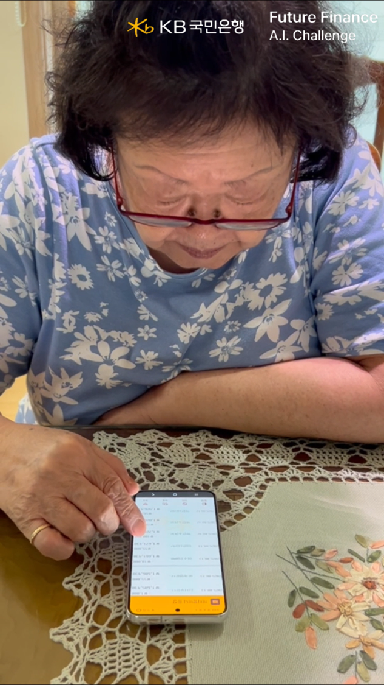
Problem & Research
고령층을 위한 금융 앱은 화면 글씨를 키우는 것만으로 해결되지 않는다고 보았습니다. 어르신들은 복잡한 화면, 계좌번호 입력 실수, 눈에 보이지 않는 거래 과정에서 더 큰 불안을 느끼고 있었습니다.
서울 동작구 흑석동 주민센터 컴퓨터반 교실의 65세 이상 어르신을 대상으로 설문과 인터뷰를 진행했고, 필요한 것은 더 많은 기능이 아니라 익숙하게 확인하고, 실수 없이 처리되며, 받을 돈을 놓치지 않게 해주는 서비스라는 결론을 얻었습니다.
화면이 복잡해서 어렵다.
계좌번호를 잘못 입력할까 불안하다.
통장도 없고, 눈에 보이는 직원도 없으니 불안하고 못 믿겠다.
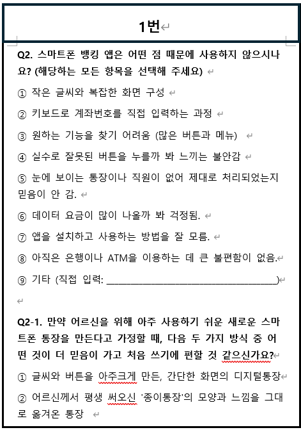
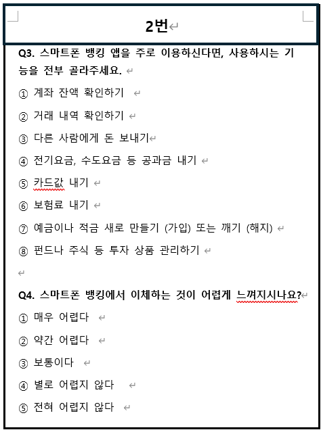
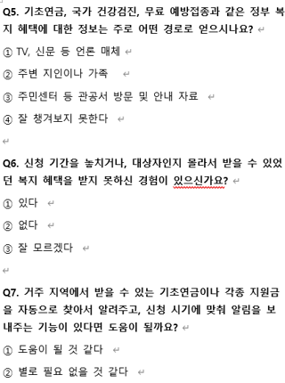
Core Features
예금주, 계좌번호, 거래일자, 입출금 내역, 잔액을 실제 종이통장과 비슷한 위치에 배치했습니다.
종이에 은행명, 계좌번호, 예금주, 금액을 쓰고 촬영하면 AI가 이체 정보를 자동 입력합니다.
기초연금 입금을 자동으로 감지하고 통장, 카드, 서비스로 받을 수 있는 혜택을 구분했습니다.
Feature 01
앱을 열었을 때 “내 통장 같다”고 느낄 수 있도록 실제 통장 이미지와 거래 내역 화면을 연결했습니다. 금액을 터치하면 숫자만 보여주는 대신 지폐와 동전 이미지로 금액을 다시 보여주어 이해를 돕습니다.
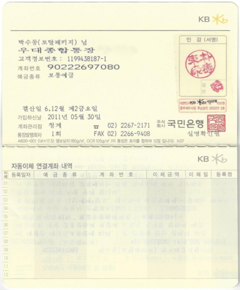
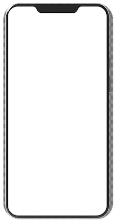
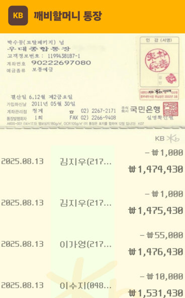
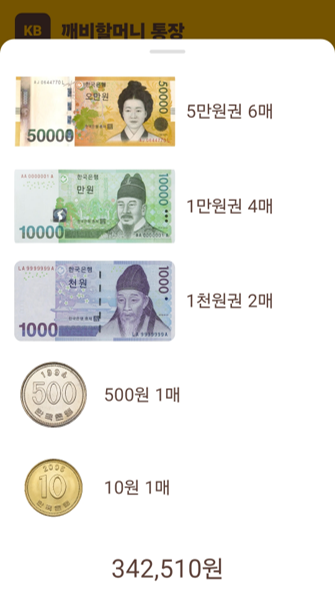
Feature 02
은행 창구의 이체전표에서 착안해 작은 키패드 입력 부담을 줄였습니다. 어르신이 종이에 정보를 쓰고 촬영하면 AI가 필요한 항목을 인식해 이체 확인 화면에 자동 입력합니다.
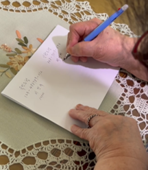
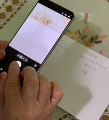
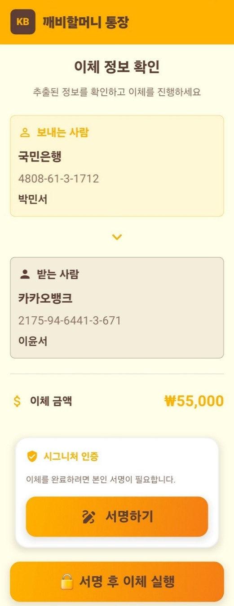
Feature 03
현장 조사에서 어르신들이 기초연금 입금 여부를 확인하기 위해 직접 은행에 가는 경우가 많다는 점을 확인했습니다. 앱은 통장 내역에서 기초연금 입금을 강조하고, 지역 복지혜택을 통장, 카드, 서비스로 나누어 보여줍니다.
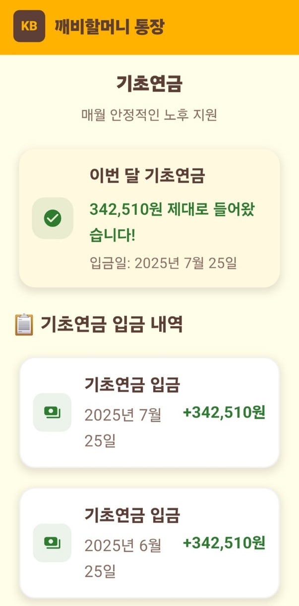
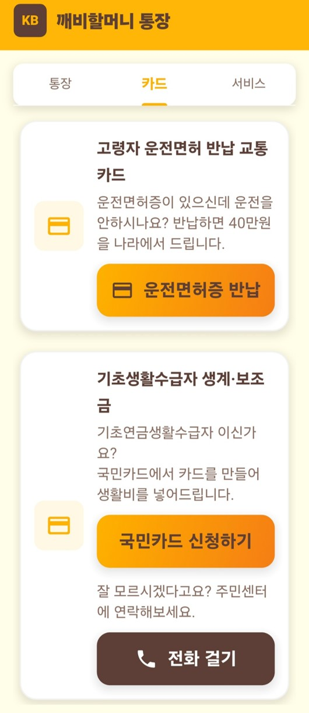
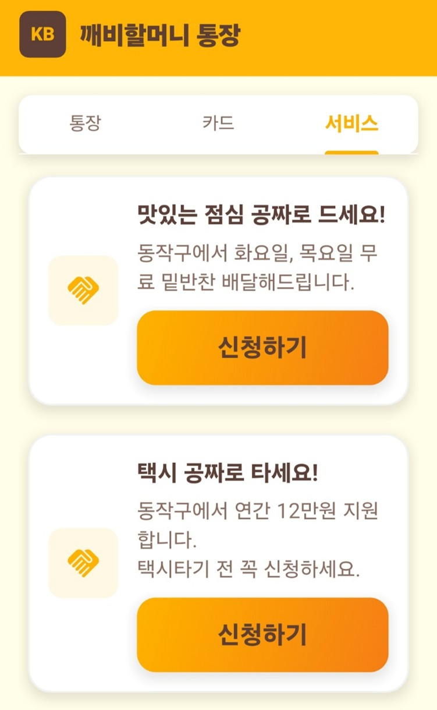
Architecture & Stack
사용자는 Flutter 기반 앱에서 인증, 거래 내역 조회, 이체전표 및 서명 이미지 업로드를 수행합니다. Firebase는 인증과 데이터 저장, 파일 관리를 담당하고, AI 기능은 Python Flask API 서버로 분리했습니다.
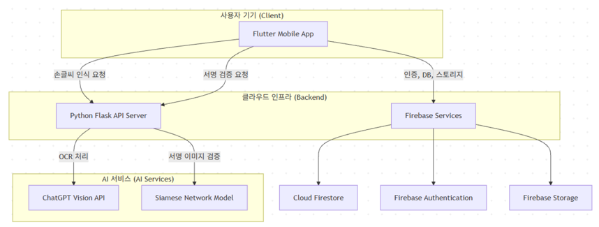
Flutter 3, Provider 패턴, 고령층 사용자를 위한 커스텀 위젯
Firebase Authentication, Cloud Firestore, Firebase Storage
Python Flask API, ChatGPT Vision API OCR, Siamese Network
AI OCR Validation
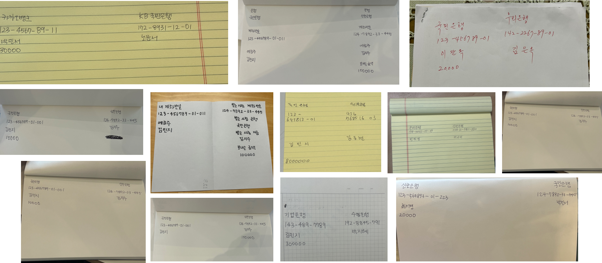
단순 텍스트 추출에는 OCR 엔진이 적합했지만, 이체전표처럼 위치와 문맥이 중요한 입력에서는 ChatGPT Vision API가 비정형 손글씨와 의미 추론에 더 유연했습니다.
건당 인식 비용은 0.04달러로 산정했습니다.
Signature Verification
같은 사람의 서명도 매번 조금씩 달라지기 때문에 단순 이미지 비교가 아니라 두 서명의 특징 벡터를 비교하는 Siamese Network 구조를 적용했습니다.
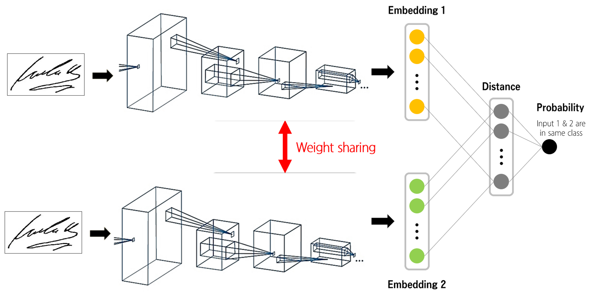
경량화 SimpleCNN을 Backbone으로 사용하고, 두 CNN이 동일한 가중치를 공유하도록 설계했습니다. Feature Vector A와 B의 차이를 L1 Distance로 계산한 뒤 Sigmoid로 유사도 점수를 출력합니다.
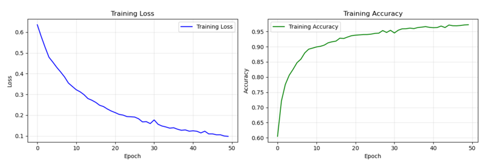
Result
깨비 할머니 통장은 종이통장 UI, 손글씨 이체, AI 서명 인증, 복지 지원금 관리 기능을 하나의 모바일 앱 흐름으로 구현한 프로젝트입니다. 단순 기획에 그치지 않고 실제 앱 화면과 사용 시연 영상까지 제작했습니다.
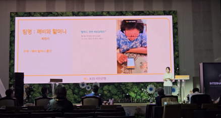
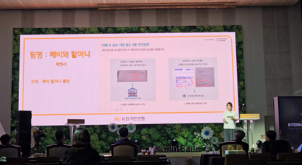
좋은 AI 서비스는 모델 성능만으로 완성되지 않고, 사용자가 실제로 신뢰하고 사용할 수 있는 경험 안에 자연스럽게 연결되어야 한다는 점을 배웠습니다.